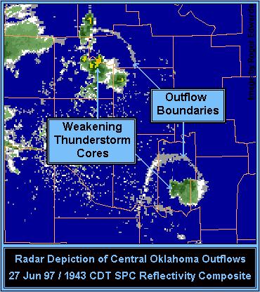

An outflow boundary is generated from the divergence of air within the downdraft of a thunderstorm that crashes into the earth's surface. It is similar to smashing a water balloon on a concrete surface. The fluid spreads out in all directions once the fluid impacts the earth's surface. The outflow from a thunderstorm will spread most rapidly in the direction the low level winds are flowing. One side of the downdraft will have to flow against the prevailing low level wind flow while the other side will be flowing with the prevailing low level wind flow. The angle the downdraft accelerates into the earth's surface is also important in determining how the downdraft's air will be distributed once impacting the surface. The acceleration rate of the downdraft is also important. Intense evaporational cooling in the middle levels of the atmosphere, minimal influence of the updraft, and a warm PBL maximizes the acceleration of a downdraft of air. The "edge" of the outflow boundary can often be detected by Doppler radar (especially in clear air mode). Convergence occurs along the leading edge of the downdraft. Convergence of dust, aerosols, and bugs at the leading edge will lead to a higher clear air signature. The signature of the leading edge is also influenced by the density change between the cold air from the downdraft and the warm environmental air. This density boundary will increase the number of echo returns from the leading edge. Clouds, hydrometeors and new thunderstorms can also develop along the outflow's leading edge. This makes it possible to locate the outflow boundary when using precipitation mode. The image below is that of two outflow boundaries from two separate storms. Often, the outflow boundary will bow in the direction it is moving the quickest.  |